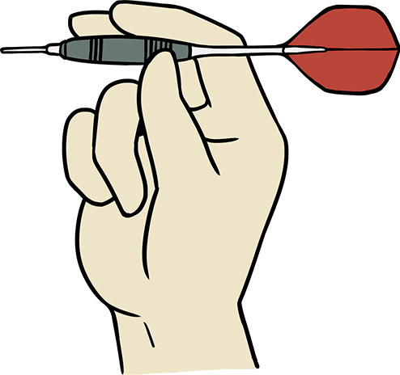

Grip
The way you hold the darts is called the grip. There are different types of grips, so try to find one that suits you. The important point for grips is not to disrupt the balance of the dart. Hold the dart with your fingers with applying not too much pressure.
Holding the dart with three fingers

First place your index finger on the dart and find the spot where the dart is level.
Support that position with your thumb from above, and use your other fingers to lightly support the dart.
